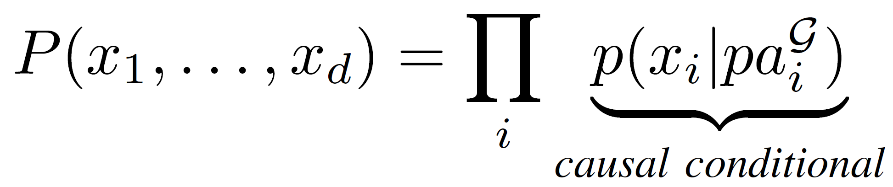
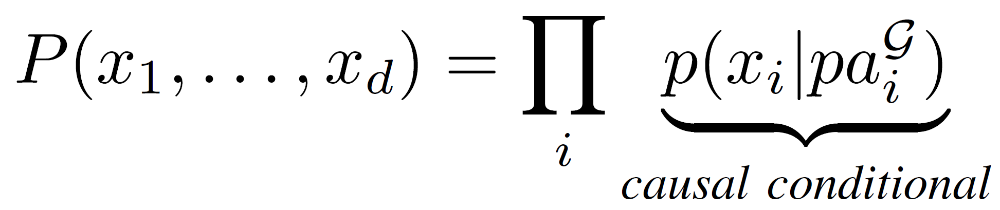

Dataflow graphs as complete causal graphs
Andrei Paleyes, Siyuan Guo, Bernhard Schölkopf, Neil Lawrence
CAIN 2023
Dataflow architecture

Data flow schemas, Dennis, J. B., Fosseen, J. B., & Linderman, J. P., International Symposium on Theoretical Programming (pp. 187-216), 1974
Causality

Causal language for dataflow
Structured causal model
(think dataflow graph)

Intervention
(think input data shift, software update, bug)
Dataflow graph = causal graph
 

Applications

Fault localisation

Business analysis

Experimentation
Open questions
- Scalability
- Costs
- Tech stack
- Ops
Intellectual debt

Intellectual Debt: With Great Power Comes Great Ignorance. Zittrain, Jonathan. 2019. Medium: Berkman Klein Center Collection
Summary
- Dataflow is a tested but niche paradigm
- Causality benefits from complete DAG
- Dataflow graphs can be used as complete causal graphs
- Applications in fault localisation, business analysis, experiments
- There are open questions
Paper: https://arxiv.org/abs/2304.11987
Code: https://github.com/apaleyes/causality-fbp
Group: ML@CL